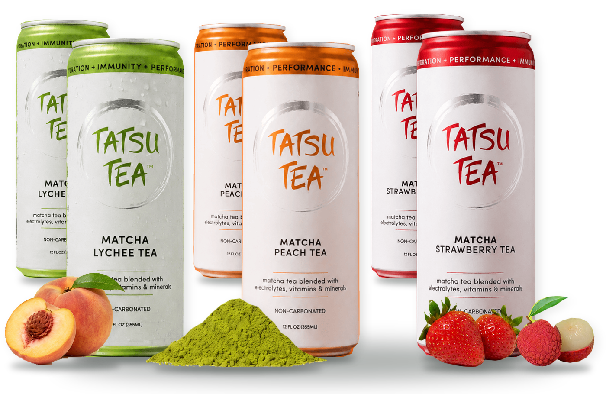
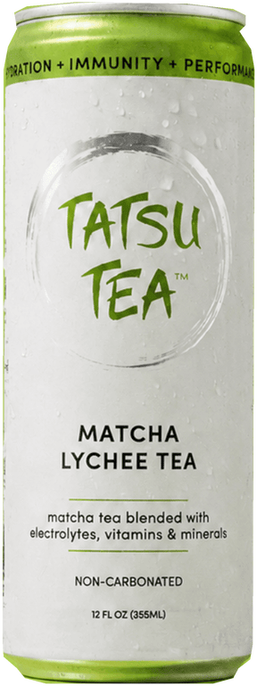
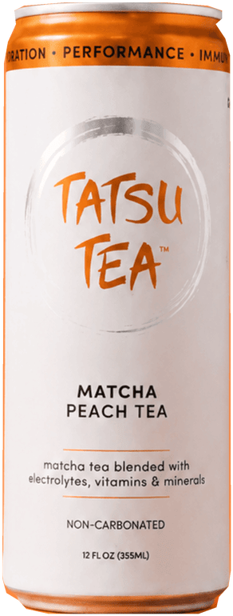
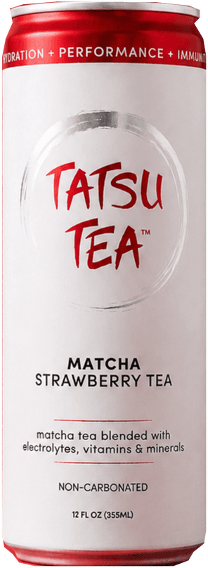
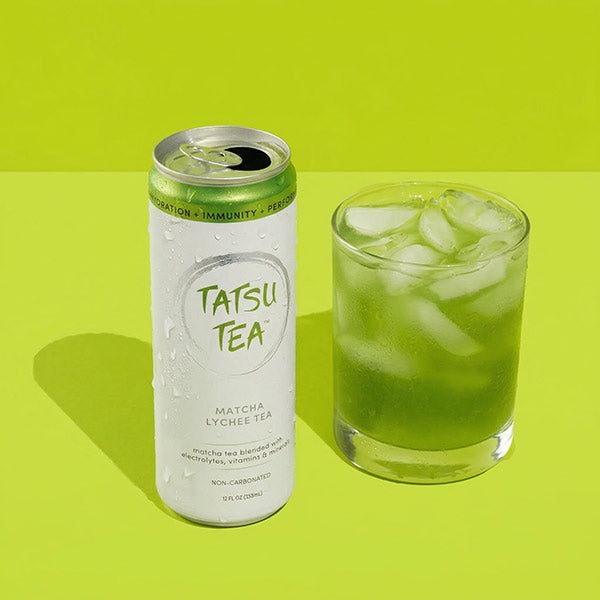

“I tried my first Tatsu today and it was so good. First time ever having anything with matcha in it and I really like it. Thank you!!!”Claudia W.Bartender
REAL MATCHA. READY TO DRINK.
Meet your new
matcha ritual.
Japanese matcha. Refreshing fruit flavors.
Light, fruit-forward, and non-carbonated.
THE DISCOVERY PACK
6 cans · 2 Lychee · 2 Peach · 2 Strawberry
$19
delivered*
About $3.17 per can · No subscription
12 fl oz cans
First pack not for you? We’ll make it right.*
“I tried my first Tatsu today and it was so good.”
Claudia W. · From the Tatsu community
THREE FLAVORS. YOUR FIRST FAVORITE.
REAL MATCHA.
ENERGY + FOCUS.
ELECTROLYTES + MORE.
ZERO PREP.
YOUR SIX-CAN INTRODUCTION



NEW TO MATCHA? START HERE.
Your first pack.
All figured out.
Three fruit-forward flavors, two cans of each. Explore the lineup before choosing a full case. One simple first step, with no subscription required.
$19delivered*6 cans · approximately $3.17 each
- 2 Lychee · 2 Peach · 2 Strawberry cans*
- Free shipping on your starter pack*
- One-time purchase. No subscription required.
- Love your first pack or your money back*

MATCHA AT THE CORE. PURPOSE IN EVERY SIP.
Start with matcha.
Go further with Tatsu.
Matcha is the foundation—not an afterthought. Tatsu brings Japanese matcha’s naturally occurring caffeine and L-theanine together with electrolytes, vitamins, and minerals in one ready-to-drink tea.
01
Matcha-powered energy & focusJapanese matcha with naturally occurring caffeine and L-theanine.
02
More in every sipA blend with electrolytes, vitamins, and minerals.
03
Fruit-forward refreshment.Explore each flavor’s ingredients and nutrition before you choose.
FROM THE TATSU COMMUNITY
Good taste.
In good company.
“I love the taste of Tatsu Tea. It gives me the caffeine boost I need for those late-night training sessions and competitions.”Cindy UngJiu Jitsu Athlete
“...it’s become my go-to drink before I hit the mats or the stage.”Matt HalpernDrummer for Periphery
Testimonials excerpted from Tatsu’s current website. Individual experiences vary.
A FEW GOOD QUESTIONS
Meet your
new matcha.
Everything you need to know before you crack your first can.
What is the Discovery Pack?
A proposed first-order starter: six cans—two Lychee, two Peach, and two Strawberry—for $19 with shipping included. The assortment, price, eligible regions, taxes, and fulfillment feasibility are not approved. This prototype cannot accept orders.
How would the taste guarantee work?
The proposal is simple: love your first pack or contact us for a refund. This is not a current policy. Eligibility, request window, refund scope, and any return requirements must be approved and displayed before launch.
Does Tatsu taste like matcha?
Tatsu is made with matcha, but the experience is light, refreshing, and fruit-forward—not a traditional earthy matcha drink. Choose Lychee, Peach, or Strawberry.
What’s inside a can?
Japanese matcha blended with real fruit juice, electrolytes, vitamins, and minerals. Tatsu is non-carbonated. The Lychee label lists 10 calories, 2 g total sugars, and 0 g added sugars per 12 fl oz can; its product page lists 52 mg caffeine. Peach and Strawberry values still need flavor-specific confirmation. See each flavor’s label for full ingredients.
How do I drink it?
Enjoy it chilled, straight from the can or poured over ice. No mixing, whisking, or brewing required.
Do I have to subscribe?
No. The proposed Discovery Pack would be a one-time purchase, with no subscription required. For existing full cases, choose a one-time 24-can purchase for $68, or a monthly subscription for $59.99 per delivery. Subscriptions renew automatically; the current store states that you can modify or cancel anytime. Confirm final terms on the live product page.
When will my order arrive?
The proposed starter price includes shipping, but the eligible destinations, dispatch time, delivery window, and tax treatment still need approval. This demo does not accept orders.
Where can I find ingredients and nutrition?
Review the flavor-by-flavor information here, or visit the live product page for the current label. View the live store ↗
Your daily matcha.
Your next move.
Matcha-powered energy and focus. Ready when you are.